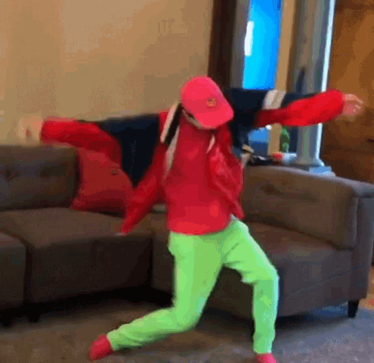

CSS es el lenguage que se utiliza para dar diseño visual a una página web: colores, texto, imágenes, etc.
NOTA: Se le llama CSS porque se refiere a una cascada.
Hola, yo soy Cristian Gael Figueroa Sandoval y estoy en el Grupo 601 y estoy en la materia de diseño web.
|  |